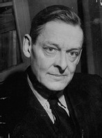

T.S. Eliot (1888-1965) tarafından yazılan Çorak Topraklar, yirminci yüzyılın büyük kâbusunun şiirdeki mihenk taşıdır. Batı’da I. Dünya Savaşı’ndan sonra yükselen korkuyu, yabancılaşmayı ve hayal kırıklığını içinde barındıran tek eserdir. Budist ve Hindu mitolojilerine, Ovid, İncil, Saint Augustine, Arthur Efsanesi, Dante, Shakespeare ve diğer kaynaklara göndermelerle dolu olan eser, eski inanç ve törenlerin modern dünyanın varoluş krizi ile büyüleyici bir kesişimini temsil eder.

Modernist dönemin pek çok eseri gibi Çorak Topraklar, I. Dünya Savaşı’na verilen geniş çaplı bir cevaptır. Milyonlarca hayatın anlamsızca kaybı, bu zalimliğin çoğunun insan yapımı teknoloji ve makinelerle gerçekleştirildiğinin farkındalığıyla Avrupa’yı sendeletmişti. Birçoklarına dünya, medeniyetin kendi üstüne çökmüş gibi görünmesiyle ansızın çok acımasız ve manevî olarak da anlamsızlaşmış gibi gelmişti.
Çorak Topraklar’da Eliot, böylesine bir viraneliğin yaşandığı topraklarda kurtuluşun ve yenilenmenin nasıl olacağını sorguladı. Açılış mısralarından itibaren şiir, yeniden doğuşu yaratmak için hem insanlık hem de doğa tarafından girişimlere karşı konulan kıtlık ve verimsizlik görüntüleri ile doludur:
Nisan en zalim aydır, yavrulayan
Leylaklar çıkar ölü topraklardan, karışan
Hatıralar ve arzular, kıpır kıpır
İlkbahar yağmuruyla kör kökler.
Şiirin öykülemesi, farklı sesler arasında okuyucunun, yabancılarla dolu bir kalabalığa düşmüş veya bilinmedik bir yerde dünyayla ilişkisi kesilmiş gibi kafasını karıştırarak aniden başka bir yere atlar. Bu uğursuz sesler çoğunlukla doğrudan okuyucuyu hedeflemesine rağmen, konuşmacıların kimlikleri bilinmez hâldedir:
Sana farklı bir şey göstereceğim
Ya sabahleyin arkanda bıraktığın gölgeni
Ya da akşamları seni karşılamak üzere yükselen gölgeni
Sana bir avuç dolusu tozla korkuyu göstereceğim.
Çorak Topraklar, Arthur efsanesinden ve ülkesini çorak bir arazi olarak arkada bırakan, yaralanmış veya sakat kalmış bir zamanların güçlü lideri Balıkçı Kral yorumlamalarından yoğun şekilde yararlanmıştır. Sadece Şövalye Perceval, bir dizi görevi tamamladığı zaman, Balıkçı Kral iyileşebilir ve krallığı yeniden yaratılabilir. Eliot, Çorak Topraklar’ın çoğunda modern dünyanın benzer bir yenilenmeyi nasıl bulabileceğini kavramaya çalışır. Sonunda gelişigüzel gibi görünen umudun pırıltısı geri gelir. Ancak bu en iyi durumdaki umut, kırılgan ve tüm insanoğlu gibi şiirin son konuşmacısının da sadece bir içe çekilme duygusuyla tutunduğu bir umuttur.